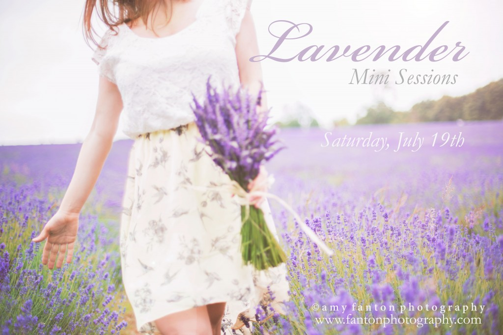
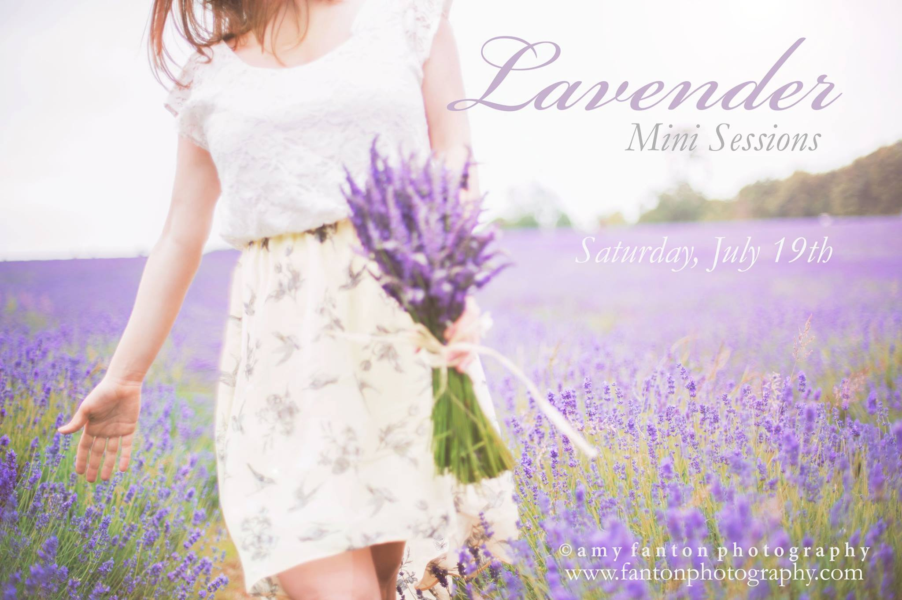

Engagements
London Lavender Photo Sessions
16 July 2014

I don’t hold mini sessions often so I’m very excited to share such a special offer for some London Lavender Photo Sessions! The sessions will take place at a beautiful Lavender farm about 15 miles outside of London amongst a landscape that will transport you to what seems like scenery from the Wizard of Oz.
This is the perfect location for couples, families, children, babies, maternity–yes i just listed pretty much all the different types of work I do because this place is nothing short of GORGEOUS and will make for some stunning images whichever way you cut it. Did I mention it smells absolutely heavenly?
And as a bonus there is an adorable Lavender farm shop that sells an array of Lavender products including fresh Lavender tea, Lavender scones, biscuits, creams, lotions, soaps and bouquets (among many other things!). I’m only offering 6 sessions so get them while they last!! PS. tag yourself or a friend who might be interested in the comments of the facebook post and bump your print credit up to £75! ( www.facebook.com/fantonphotography )n+
Lavender Mini Sessions £175 25 minute session Online Gallery of 8-10 images Print credit of £50
